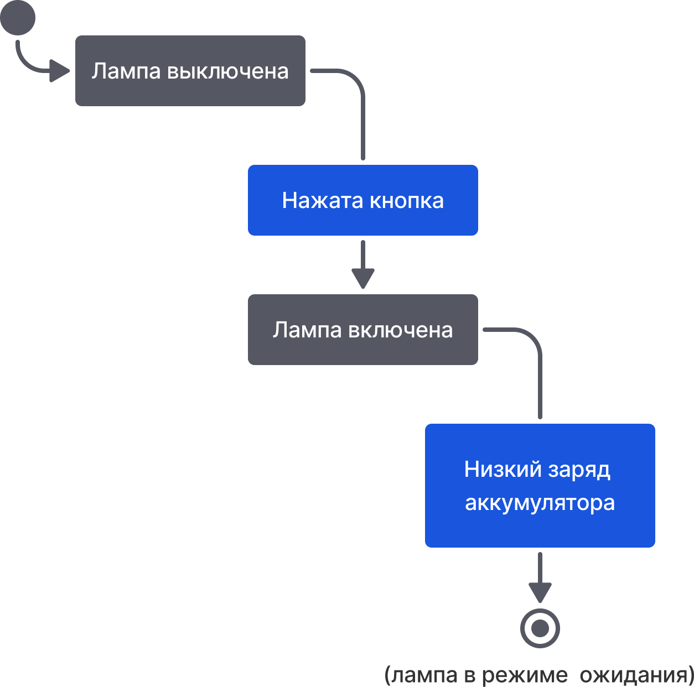

Любой процесс с чего-то начинается. Соответственно, машина состояний должна иметь начальное состояние. Чтобы его обозначить, используют закрашенный кружок со стрелкой, указывающей от круга к начальному состоянию. Кружок также называют начальным псевдосостоянием, так как он сам не является состоянием, а лишь указывает на начало процесса.
Например, лампа всегда в режиме «Ожидание», пока ее не включили или другими словами она всегда выключена.
Машины состояний могут описывать бесконечные процессы, но в какой-то момент может произойти сбой электроэнергии и возникнет необходимость перевести лампу в режим энергосбережения, после которого лампа выключится. Чтобы обозначить завершение процесса, используется конечное состояние. Оно представлено в виде круга, окруженного на небольшом расстоянии сплошной окружностью.
На примере лампы конечным состоянием будет режим ожидания. Мы на всякий случай отметили это в скобках, хотя на схеме это обычно не подписывается.